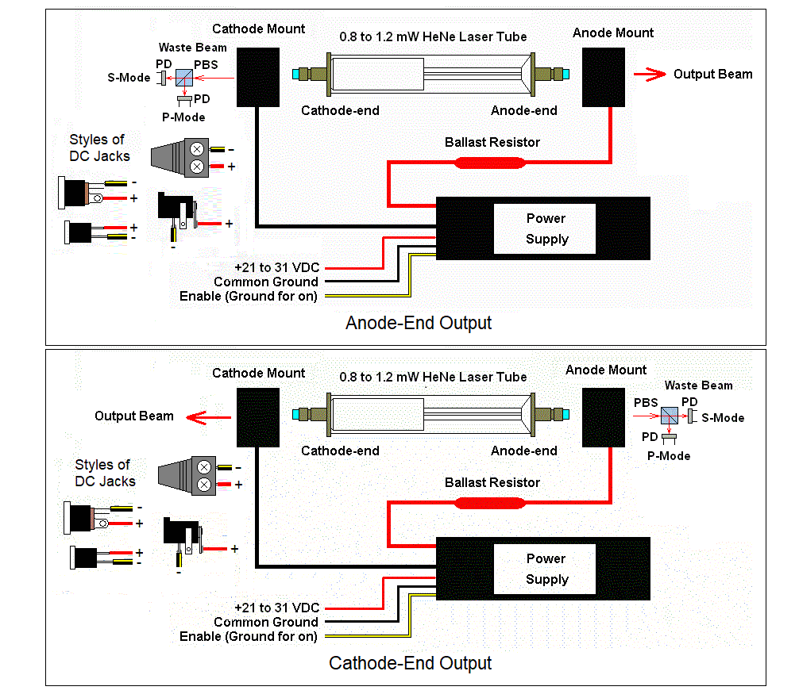

Instructions for Wiring the Laser Drive 103-23 HeNe Laser Power Supply
This is detailed info on assembling the Laser Drive 103-23 power supply brick
with ballast resistor(s) and tube mounting brackets. The diagram below shows
the general arrangement.

Wiring the power supply
- Attach the thin red wire to the positive of the wall adapter. Attach
the yellow and black wires (tied together) to the negative of the
wall adapter. DOUBLE CHECK THE WIRING. REVERSE POLARITY WILL BLOW
THE HENE LASER POWER SUPPLY OR DAMAGE IT SUCH THAT THERE IS NO OUTPUT
CURRENT REGULATION - WHICH WILL DAMAGE THE TUBE. AND MAY BLOW THE
WALL ADAPTER AS WELL.
- A female power jack has been included with the kit which may be used
if desired. Otherwise, cut off the barrel connector on the DC adapter
cord and connect directly to the wires of the brick
Refer to the diagram above for the terminals on the DC jack depending on
the style that you have. DOUBLE CHECK POLARITY WITH A MULTIMETER BEFORE
ATTEMPTING TO POWER THE BRICK AND TUBE!!!!
CAUTION: ALL INPUT WIRING MUST BE SECURED USING SOLDER, WIRE NUTS, OR
A SUITABLE CONNECTOR. DO NOT JUST WRAP THE WIRES TOGETHER. INTERMITTENT
CONNECTIONS BLOW STUFF.
Installing the tube
Examine the mirrors of the laser tube to determine the end for the main
beam. In the past, most of these were from the anode-end but it can come
from either end depending on the specific tube. There will be an AR coating
on the output-end mirror which appears blue-ish in reflected light.
Wiring using the brackets:
- If the output is from the cathode-end of the tube,
there should be a hole in the cathode-end bracket so
the photons can escape. ;-) If not, it is possible to swap the two brackets
or drill a hole. But the bracket with the red wire MUST have the anode-end
of the tube.
- Remove the adjustable attenuator plate (if present) from the mounting
bracket by unscrewing the hex-head screw. Since reducing the power
of a ~1 mW laser is kind of silly, this part is probably not installed.
- Attach the anode and cathode mounting brackets to a secure surface
spaced to permit the tube to just fit between them. For testing this
step can be postponed. Depending on how the tube will be used, one or
both brackets may be trimmed to free up space between them.
- Flip open the covers on the mounting brackets by pulling back on the
locking tabs.
- CAREFULLY lay the tube ends on the mounting brackets paying particular
attention to polarity: The positive has the fat red wire and receives the
anode (glass)-end of the tube; The negative has the fat black and receives the
cathode (aluminum can)-end of the tube. Make sure the anode-end bracket isn't
too cockeyed to permit the beam from getting out of the hole. :) Make sure the
tip-off (exhaust tube) at the cathode end clears the structure of the
bracket.
CAUTION: THE TUBE MAY APPEAR TO WORK WITH REVERSE POLARITY
BUT WILL PROBABLY BE RUINED IN A FEW MINUTES. Gently press the covers
in place so they click and are secure.
Take care to avoid stressing the fat red wires to the ballast resistor.
If either breaks off, it may be necessary to replace the ballast resistor.
Wiring using tube clips (if included, mostly for the various stabilized
lasers where special mounting may be desirable
- Cut the fat wires near the mounting brackets (retaining the ballast
resistor).
- Solder tube clips to the wires.
- Carefully route and secure the wires so they don't stress the conections
at the tube.
- Gently press the clips onto the tube mirror mounts making sure they
go to the correct mount: The positive has the fat red wire and receives the
anode (glass) end of the tube; The negative has the fat black and receives the
cathode (aluminum can) end of the tube. Make sure the anode-end bracket isn't
too cockeyed to permit the beam to get out the hole. :) Make sure the
tip-off (exhaust tube) at the cathode-end clears the structure of the
bracket. CAUTION: THE TUBE MAY APPEAR TO WORK WITH REVERSE POLARITY
BUT WILL PROBABLY BE RUINED IN A FEW MINUTES.
WARNING: THE VOLTAGE BETWEEN THE ANODE AND CATHODE OF THE LASER TUBE MAY BE
GREATER THAN 5,000 V WHILE STARTING AND GREATER THAN 1,000 V WHEN RUNNING.
TOUCHING THIS WILL PROBABLY NOT BE LETHAL BUT YOU WILL FEEL IT AND PERHAPS
TOSS THE ENTIRE RIG ACROSS THE ROOM. :( SIGNIFICANT CHARGE WILL REMAIN
ACROSS THE TUBE AND POWER SUPPLY FOR SOME TIME AFTER INPUT POWER IS REMOVED.
USE A CLIP LEAD ACROSS THE TUBE TO DISCHARGE BEFORE TOUCHING ANYTHING TO BE
SAFE.